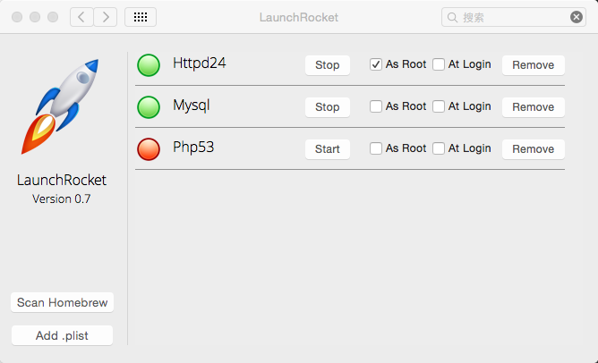

MAC下用homebrew安装及配置apache、php和mysql
原链接地址：http://lonewolf.me/content/2015/03/22/homebrew-apache-php-mysql.html
原创博客，转载请注明。
我们用到php运行环境的时候总喜欢用集成包，其实在mac下，用homebrew也可以很快的安装这些东西，配置也很简单。
#homebrew homebrew是mac下的一个包安装管理工具，使用非常简单方便。
- 安装homebrew
在终端中执行：
ruby -e "$(curl -fsSL https://raw.githubusercontent.com/Homebrew/install/master/install)"
这样就安装好homebrew了。
- 安装命令行软件
如安装wget，则执行：
brew install wget
其它具体的使用方法可自行翻阅 官网（中文）。
安装apache php mysql
因为apache和php不在默认的仓库里，所以我们要先添加其所在的仓库。
brew tap homebrew/apache
brew tap homebrew/php
之后就是正常的安装了，安装过程homebrew会为你自行处理各种依赖。
brew install httpd24
brew install php53
brew install mysql
注意：apache在homebrew中的名字为httpd。 这些都可以指定安装的版本，这里我安装apache2.4，php5.3，mysql是最新版。 以下的路径说明都是以这个为基准，请自行修改为你所下载的版本。
配置apache
配置文件路径为/usr/local/etc/apache2/2.4/httpd.conf，以下的配置都需要在相应的地方修改。
- 添加php模块
# ====php module====
LoadModule php5_module /usr/local/Cellar/php53/5.3.29/libexec/apache2/libphp5.so
<IfModule mod_php5.c>
AddType application/x-httpd-php .php
AddType application/x-httpd-php-source .phps
<IfModule mod_dir.c>
DirectoryIndex index.html index.php
</IfModule>
</IfModule>
- 修改监听端口 默认的端口为8080，我们改为80：
Listen 80
- 修改root根目录
DocumentRoot "/Users/lonewolf/Public/dev/php/app"
<Directory "/Users/lonewolf/Public/dev/php/app">
请自行修改为你的目录
配置mysql
使用默认的mysql配置启动时，会占用434M的内存，这个占用太多了，所以要修改一下。
配置路径为/usr/local/Cellar/mysql/5.6.23/my.cnf。
# ========
skip-external-locking
key_buffer = 16M
max_allowed_packet = 1M
table_open_cache = 64
sort_buffer_size = 512K
net_buffer_length = 8K
read_buffer_size = 256K
read_rnd_buffer_size = 512K
myisam_sort_buffer_size = 8M
# ========
这样启动之后就下降到100M以下了。
到这里，我们的安装和配置就完成了，不过有一点很不好，就是启动和停止这些服务都需要在命令行下输入，有没有图形化的管理界面呢？
有的，答案是LaunchRocket，说这个之前我们先来了解一下另一个工具homebrew-cask。
homebrew-cask
homebrew-cask是homebrew的一个扩展，用于安装图形界面mac程序，如google chrome、QQ等等。
- 安装
brew install caskroom/cask/brew-cask
- 使用
brew cask install google-chrome
具体的功能请翻阅官网。
LaunchRocket
LaunchRocket是管理homebrew所安装应用的一个管理器，它在系统设置中。 安装命令：
brew cask install launchrocket
界面如下：

> 不知道为什么，httpd需要选As Root才能真正运行起来。
到此，安装、配置、运行各方面都完成了。
其它工具
最后介绍两个有用的工具：
1、cakebrew
cakebrew是图形化管理homebrew的一个软件，也就是让你不用敲命令即可安装软件。

2、adminer
adminer是用php写的一个数据库管理工具，可以管理 MySQL, PostgreSQL, SQLite, MS SQL, Oracle, MongoDB等类型数据库，而且还是单文件，安装部署非常方便，支持多种语言。